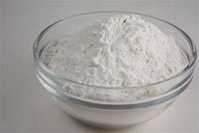

Ingredient Spotlight: Flour

Overview
Description: Flour is a key ingredient in baking, derived from grinding grains or seeds.
Origin: Flour has been used in various forms for thousands of years, dating back to ancient civilizations.
Nutritional Information
| Nutrient |
Amount per 100g |
| Calories |
364 |
| Fat |
1g |
| Carbohydrates |
76g |
| Protein |
10g |
Health Benefits:
- Source of energy due to high carbohydrate content.
- Contains essential nutrients like iron and B vitamins.
Culinary Uses
Flavor Profile: Flour has a neutral flavor that absorbs other tastes well.
Cooking Methods: Used in baking, thickening sauces, and creating batters.
Common Dishes:
Storage and Preparation Tips
Storage Guidelines: Store in a cool, dry place in an airtight container.
Preparation Tips: Sift flour before measuring for more accurate amounts.
Varieties and Substitutes
Types:
- All-purpose flour
- Whole wheat flour
- Gluten-free flour
Substitutes:
Almond flour or coconut flour can be used as gluten-free alternatives.
Fun Facts and Trivia
- Flour can be made from various grains, including wheat, rice, and corn.
- The word "flour" comes from the Latin word "florem," meaning "flower." This refers to the fine powder produced from grinding grains.
FAQs
Q: What is the best type of flour for baking?
A: All-purpose flour is versatile and works well for most baking needs.
Q: How should flour be stored?
A: Store in a cool, dry place in an airtight container to maintain freshness.